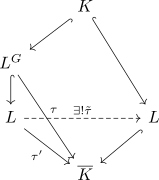

Fixkörper der Galoisgruppe gleich der Galoiserweiterung
Satz
Sei $L/K$ eine Galoiserweiterung, so ist der Fixkörper der Galoisgruppe
\begin{align*}
L^{\mathrm{Gal}(L/K)} = K
\end{align*}
Beweis
Sei $\tau \in \mathrm{Hom}_{K}(L^G, \overline{K})$, so exsitiert eine fortsetzung $\tau': L \rightarrow \overline{K}$ (vgl. Fortsetzungssatz für Körpererweiterungen)
Da $K/L$ normal ist, existiert ein $\tilde{\tau} \in \mathrm{Aut}_K(L)$

Nach Definition
\begin{align*}
L^G = \{\alpha \in L \vert \sigma(\alpha) = \alpha\}
\end{align*}
folgt damit $\mathrm{Hom}_{K}(L^G, \overline{K}) = \{\mathrm{id}\}$ und somit für den Separabilitätsgrad
\begin{align*}
[L^G : K]_s = 1
\end{align*}
Da $L/K$ separabel ist, ist nach dem Sandwhichsatz über separablen Körpererweiterungen $L^G/K$ separabel und nach Separabilitätsgrad gleich Grad und endliche, separable körpererweiterung folgt somit
\begin{align*}
1 = [L^G : K]_s = [L^G : K]
\end{align*}
resp.
\begin{align*}
K = L^G
\end{align*}